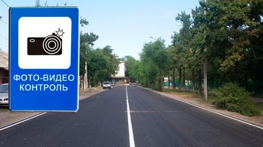

{% extends 'base.html' %}
{% block content %}
В рамках второй фазы проекта "Безопасный город" в Бишкеке установили еще 11 аппаратно-программных комплексов
(АПК), сообщили Sputnik Кыргызстан в концерне "Вега". На первом этапе было установлено 12 камер фото- и
видеофиксации. На нашей карте вы сможете увидеть, где расположены все 23 радара. Новые обозначены синим цветом,старые — красным. АПК установлены на следующих перекрестках:
- проспект Жибек Жолу — улица Абдрахманова;
- Жибек Жолу — улица Курманджан Датки;
- проспекты Жибек Жолу — Молодой Гвардии;
- Жибек Жолу — улица Фучика;
- проспекты Жибек Жолу — Манаса;
- проспект Чуй — улица Абдрахманова;
- Чуй — улица Бейшеналиевой (район Ошского рынка);
- Чуй — улица Курманджан Датки;
- проспекты Чуй — Молодой Гвардии;
- Чуй — улица Павлова;
- Чуй — улица Фучика;
- проспекты Чуй — Манаса;
- путепровод на проспекте Манаса;
- путепровод на улице 7 Апреля;
- путепровод на улице Байтик Баатыра;
- путепровод на улице Ибраимова;
- улица Боконбаева — проспект Манаса;
- улицы Ахунбаева — Байтик Баатыра;
- улицы Байтик Баатыра — Горького;
- улицы Боконбаева — Абдрахманова;
- улицы Горького — 7 Апреля;
- улицы Махатмы Ганди — Боталиева;
- улицы Московская — Абдрахманова.

{% endblock%}